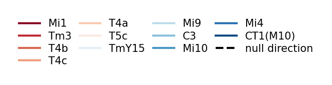
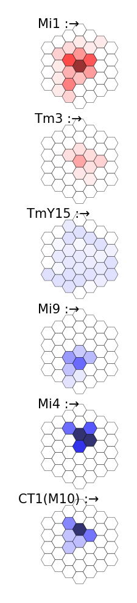

Figure 4¶
a¶
%load_ext autoreload
%autoreload 2
import matplotlib.pyplot as plt
import numpy as np
from flyvision import EnsembleView
from flyvision.analysis.visualization import plots
from flyvision.analysis.moving_bar_responses import plot_angular_tuning
ensemble = EnsembleView("flow/0000")
Loading ensemble: 0%| | 0/50 [00:00<?, ?it/s]
[2024-10-14 23:37:32] ensemble:166 Loaded 50 networks.
stims_and_resps = ensemble.moving_edge_responses()
stims_and_resps['responses'] /= (norm := ensemble.responses_norm(rectified=True))
# retrieve cluster indices for averaging across best clusters
cell_types = [
"L1",
"L2",
"L3",
"L4",
"L5",
"Mi1",
"Tm3",
"Mi4",
"Mi9",
"CT1(M10)",
"T4a",
"T4b",
"T4c",
"T4d",
"T5a",
"T5b",
"T5c",
"T5d",
"Tm1",
"Tm2",
"Tm4",
"Tm9",
"CT1(Lo1)",
"TmY3",
]
cluster_indices = {}
for cell_type in cell_types:
if cell_type not in cluster_indices:
cluster_indices[cell_type] = ensemble.cluster_indices(cell_type)
[2024-10-14 23:37:59] clustering:835 Loaded L1 embedding and clustering from /groups/turaga/home/lappalainenj/FlyVis/private/flyvision/data/results/flow/0000/umap_and_clustering
[2024-10-14 23:38:00] clustering:835 Loaded L2 embedding and clustering from /groups/turaga/home/lappalainenj/FlyVis/private/flyvision/data/results/flow/0000/umap_and_clustering
[2024-10-14 23:38:00] clustering:835 Loaded L3 embedding and clustering from /groups/turaga/home/lappalainenj/FlyVis/private/flyvision/data/results/flow/0000/umap_and_clustering
[2024-10-14 23:38:00] clustering:835 Loaded L4 embedding and clustering from /groups/turaga/home/lappalainenj/FlyVis/private/flyvision/data/results/flow/0000/umap_and_clustering
[2024-10-14 23:38:02] clustering:835 Loaded L5 embedding and clustering from /groups/turaga/home/lappalainenj/FlyVis/private/flyvision/data/results/flow/0000/umap_and_clustering
[2024-10-14 23:38:02] clustering:835 Loaded Mi1 embedding and clustering from /groups/turaga/home/lappalainenj/FlyVis/private/flyvision/data/results/flow/0000/umap_and_clustering
[2024-10-14 23:38:02] clustering:835 Loaded Tm3 embedding and clustering from /groups/turaga/home/lappalainenj/FlyVis/private/flyvision/data/results/flow/0000/umap_and_clustering
[2024-10-14 23:38:03] clustering:835 Loaded Mi4 embedding and clustering from /groups/turaga/home/lappalainenj/FlyVis/private/flyvision/data/results/flow/0000/umap_and_clustering
[2024-10-14 23:38:03] clustering:835 Loaded Mi9 embedding and clustering from /groups/turaga/home/lappalainenj/FlyVis/private/flyvision/data/results/flow/0000/umap_and_clustering
[2024-10-14 23:38:03] clustering:835 Loaded CT1(M10) embedding and clustering from /groups/turaga/home/lappalainenj/FlyVis/private/flyvision/data/results/flow/0000/umap_and_clustering
[2024-10-14 23:38:05] clustering:835 Loaded T4a embedding and clustering from /groups/turaga/home/lappalainenj/FlyVis/private/flyvision/data/results/flow/0000/umap_and_clustering
[2024-10-14 23:38:05] clustering:835 Loaded T4b embedding and clustering from /groups/turaga/home/lappalainenj/FlyVis/private/flyvision/data/results/flow/0000/umap_and_clustering
[2024-10-14 23:38:05] clustering:835 Loaded T4c embedding and clustering from /groups/turaga/home/lappalainenj/FlyVis/private/flyvision/data/results/flow/0000/umap_and_clustering
[2024-10-14 23:38:06] clustering:835 Loaded T4d embedding and clustering from /groups/turaga/home/lappalainenj/FlyVis/private/flyvision/data/results/flow/0000/umap_and_clustering
[2024-10-14 23:38:06] clustering:835 Loaded T5a embedding and clustering from /groups/turaga/home/lappalainenj/FlyVis/private/flyvision/data/results/flow/0000/umap_and_clustering
[2024-10-14 23:38:06] clustering:835 Loaded T5b embedding and clustering from /groups/turaga/home/lappalainenj/FlyVis/private/flyvision/data/results/flow/0000/umap_and_clustering
[2024-10-14 23:38:08] clustering:835 Loaded T5c embedding and clustering from /groups/turaga/home/lappalainenj/FlyVis/private/flyvision/data/results/flow/0000/umap_and_clustering
[2024-10-14 23:38:08] clustering:835 Loaded T5d embedding and clustering from /groups/turaga/home/lappalainenj/FlyVis/private/flyvision/data/results/flow/0000/umap_and_clustering
[2024-10-14 23:38:08] clustering:835 Loaded Tm1 embedding and clustering from /groups/turaga/home/lappalainenj/FlyVis/private/flyvision/data/results/flow/0000/umap_and_clustering
[2024-10-14 23:38:09] clustering:835 Loaded Tm2 embedding and clustering from /groups/turaga/home/lappalainenj/FlyVis/private/flyvision/data/results/flow/0000/umap_and_clustering
[2024-10-14 23:38:09] clustering:835 Loaded Tm4 embedding and clustering from /groups/turaga/home/lappalainenj/FlyVis/private/flyvision/data/results/flow/0000/umap_and_clustering
[2024-10-14 23:38:10] clustering:835 Loaded Tm9 embedding and clustering from /groups/turaga/home/lappalainenj/FlyVis/private/flyvision/data/results/flow/0000/umap_and_clustering
[2024-10-14 23:38:11] clustering:835 Loaded CT1(Lo1) embedding and clustering from /groups/turaga/home/lappalainenj/FlyVis/private/flyvision/data/results/flow/0000/umap_and_clustering
[2024-10-14 23:38:11] clustering:835 Loaded TmY3 embedding and clustering from /groups/turaga/home/lappalainenj/FlyVis/private/flyvision/data/results/flow/0000/umap_and_clustering
# plot the tuning across the best clusters
fig, axes, _ = plots.plt_utils.get_axis_grid(
range(4),
projection="polar",
aspect_ratio=4,
figsize=[2.95, 0.83],
wspace=0.25,
)
for i, cell_type in enumerate(["T4a", "T4b", "T4c", "T4d"]):
plot_angular_tuning(
stims_and_resps.sel(network_id=cluster_indices[cell_type][0]),
cell_type=cell_type,
intensity=1,
fig=fig,
ax=axes[i],
groundtruth=True,
groundtruth_linewidth=1.0,
average_models=True,
model_dim=2,
zorder=100,
)
axes[i].set_xlabel(cell_type)

fig, axes, _ = plots.plt_utils.get_axis_grid(
range(4),
projection="polar",
aspect_ratio=4,
figsize=[2.95, 0.83],
wspace=0.25,
)
for i, cell_type in enumerate(["T5a", "T5b", "T5c", "T5d"]):
plot_angular_tuning(
stims_and_resps.sel(network_id=cluster_indices[cell_type][0]),
cell_type=cell_type,
intensity=0,
fig=fig,
ax=axes[i],
groundtruth=True,
groundtruth_linewidth=1.0,
average_models=True,
model_dim=2,
zorder=100,
)
axes[i].set_xlabel(cell_type)

b¶
from datamate import namespacify
from flyvision.analysis.moving_edge_currents import CellTypeArray, MovingEdgeCurrentView
from flyvision.datasets import MovingEdge
target_types = ["T4c"]
experiment_data = ensemble.moving_edge_currents()
dataset = MovingEdge(**experiment_data[0].config)
current_views = {}
norm = CellTypeArray(ensemble.responses_norm(rectified=False), ensemble[0].connectome)
for target_type in target_types:
if target_type not in current_views:
current_views[target_type] = MovingEdgeCurrentView(
ensemble, target_type, experiment_data, dataset.arg_df
)
view = current_views[target_type]
for target_type in target_types:
current_views[target_type] = view.divide_by_given_norm(norm)
cell_type = "T4c"
current_view = current_views[cell_type]
fig, ax = current_view.model_selection(cluster_indices[cell_type][0]).plot_response(
1, 90, t_end=1.0
)
xlim_responses = ax.get_xlim()
ax.set_ylabel("voltage (a.u.)", fontsize=5)
ax.set_xlabel("time (s)", fontsize=5)
Text(0.5, 0, 'time (s)')

fig, ax, legend_fig, legend_ax = current_view.model_selection(
cluster_indices[cell_type][0]
).plot_temporal_contributions(
1,
90,
t_start=0,
t_end=1,
model_average=True,
legend=False,
sum_exc_inh=False,
only_sum=False,
max_figure_height_cm=3.3941,
panel_height_cm=3.3941,
max_figure_width_cm=4.0513,
panel_width_cm=4.0513,
hide_source_types=None,
)
ylim = ax.get_ylim()
ax.set_ylabel("current (a.u.)", fontsize=5)
Text(0, 0.5, 'current (a.u.)')


fig, ax, _ = current_view.model_selection(
cluster_indices[cell_type][0]
).plot_spatial_contribution_grid(
t_start=0,
t_end=1,
)

d¶
from flyvision.utils.color_utils import flash_response_color_labels
from flyvision.analysis.visualization.figsize_utils import fit_panel_size
from scipy.signal import find_peaks
from flyvision.utils.hex_utils import hex_rows
from flyvision.analysis.visualization import plt_utils, plots
from flyvision.analysis.visualization.plots import plot_strf
from flyvision.datasets.dots import SpatialImpulses
norm = ensemble.responses_norm()
flashes_and_resps = ensemble.spatial_impulses_responses()
flashes_and_resps['responses'] = flashes_and_resps['responses'] / norm
dataset = SpatialImpulses(**flashes_and_resps.attrs['config'])
srf_cell_types = [
"Mi1",
"Tm3",
"Mi4",
"Mi9",
"CT1(M10)",
"Tm1",
"Tm2",
"Tm4",
"Tm9",
"CT1(Lo1)",
]
def strf_to_srf(strf):
# subtract spatial mean of baseline response
strf = (strf - strf.isel(frame=0).mean("sample").item()).squeeze().values.T
# find the absmax of the response to central impulse, corresponding to
# x.shape[0]//2
absmax_index = find_peaks(np.abs(strf[:, strf.shape[1] // 2]))[0]
absmax_index = absmax_index[0] if absmax_index.any() else 0
return strf[absmax_index].squeeze()
mean_srfs = {}
for cell_type in srf_cell_types:
strfs = (
flashes_and_resps['responses']
.sel(network_id=cluster_indices[cell_type][0])
.custom.where(time=">=0,<0.25", t_impulse=0.02, cell_type=cell_type, intensity=1)
.mean("network_id")
)
mean_srfs[cell_type] = strf_to_srf(strfs)
x, y = hex_rows(2, 5)
fig, axes, pos = plt_utils.ax_scatter(
x, y, figsize=[3.5, 2], hpad=0, wpad=0.1, wspace=-0.5, hspace=-0.4
)
axes = np.array(axes).reshape(2, 5)
for i, row in enumerate(np.array(srf_cell_types).reshape(2, 5)):
for j, cell_type in enumerate(row):
crange = np.max(np.abs(mean_srfs[cell_type]))
fig, ax, _ = plots.hex_scatter(
dataset.dots.u,
dataset.dots.v,
mean_srfs[cell_type],
cmap=plt.cm.coolwarm,
vmin=-crange,
vmax=crange,
figsize=[3, 3],
cbar=False,
fig=fig,
ax=axes[1 - i, j],
)
ax.set_xlabel(cell_type, fontsize=6, labelpad=-10)
for ax in axes.flatten():
flash_response_color_labels(ax)

e¶
from flyvision.datasets.dots import CentralImpulses
central_flash_and_resps = ensemble.central_impulses_responses()
central_flash_and_resps['responses'] = central_flash_and_resps['responses'] / norm
dataset = CentralImpulses(**central_flash_and_resps.attrs['config'])
trf_cell_types = np.array([
"Mi1",
"Tm3",
"Mi4",
"Mi9",
"CT1(M10)",
"Tm1",
"Tm2",
"Tm4",
"Tm9",
"CT1(Lo1)",
"L1",
"L2",
"L3",
"L4",
"L5",
]).reshape(5, 3, order="F")
durations = [0.02, 0.05, 0.1, 0.2, 0.3]
on_cmap = plt_utils.truncate_colormap(plt.cm.Blues_r, minval=0.0, maxval=0.4).resampled(
len(durations)
)
off_cmap = plt_utils.truncate_colormap(plt.cm.Blues_r, minval=0.5, maxval=0.9).resampled(
len(durations)
)
cmaps = {
1.0: [on_cmap(i) for i in range(on_cmap.N)][::-1],
0: [off_cmap(i) for i in range(off_cmap.N)][::-1],
}
fig, axes = fit_panel_size(
5,
3,
max_figure_height_cm=5.35,
max_figure_width_cm=8,
panel_width_cm=8 / 3,
panel_height_cm=5.35 / 10,
).axis_grid(wspace=0.6, hspace=0.0, as_matrix=True)
for i, row in enumerate(trf_cell_types):
for j, cell_type in enumerate(row):
ax = axes[i, j]
for q, duration in enumerate(durations[::-1]):
for intensity in [0, 1]:
color = cmaps[intensity][
q
] # plt.cm.Blues(256) if intensity == 1 else plt.cm.Blues(128)
# linestyle = "solid" if intensity == 1 else "dashed"
zorder = 1 if intensity == 1 else 0
r = (
central_flash_and_resps['responses']
.sel(network_id=cluster_indices[cell_type][0])
.custom.where(
time=">=0,<1.0",
cell_type=cell_type,
intensity=intensity,
t_impulse=duration,
)
.mean("network_id")
)
# subtract baseline after model averaging to plot it centered
mean = (r - r.isel(frame=0).values).squeeze()
ax.plot(r.time, mean, linewidth=0.5, color=color, zorder=zorder)
ax.hlines(
mean[0],
r.time.min(),
r.time.max(),
linewidth=0.5,
color="0.5",
zorder=-1,
)
plt_utils.rm_spines(ax)
ax.yaxis.set_label_position("right")
ax.set_ylabel(
cell_type,
fontsize=6,
rotation=0,
ha="left",
va="center",
labelpad=0.1,
)
# ylim = np.array)
ylim = np.array(ax.get_ylim())
ylim = (-max(abs(ylim)), max(abs(ylim)))
ax.set_ylim(ylim)
for ax in axes.flatten():
flash_response_color_labels(ax)

stimulus
fig, axes = fit_panel_size(
5,
3,
max_figure_height_cm=5.35,
max_figure_width_cm=8,
panel_width_cm=8 / 3,
panel_height_cm=5.35 / 10,
).axis_grid(wspace=0.6, hspace=0.0, as_matrix=True, unmask_n=1)
ax = axes[0, 0]
for j, duration in enumerate(durations[::-1]):
for intensity in [0, 1]:
color = cmaps[intensity][j]
# linestyle = "solid" if intensity == 1 else "dashed"
zorder = 1 if intensity == 1 else 0
stim = (
central_flash_and_resps['stimulus']
.custom.where(
time=f">=-{2 * central_flash_and_resps.attrs['config']['dt']},<1.0",
intensity=intensity,
t_impulse=duration,
u_in=0,
v_in=0,
)
.squeeze()
)
ax.plot(stim, linewidth=0.5, color=color, zorder=zorder)
ax.hlines(
0,
stim.time.min(),
stim.time.max(),
linewidth=0.5,
color="0.5",
zorder=-1,
)
plt_utils.rm_spines(ax)
ylim = np.array(ax.get_ylim())
ylim = (-max(abs(ylim)), max(abs(ylim)))
ax.set_ylim(ylim)
(-1.05, 1.05)
Extended Data Fig. 9¶
T4c¶
strfs = (
flashes_and_resps['responses']
.sel(network_id=cluster_indices["T4c"][0])
.custom.where(t_impulse=0.02, cell_type="T4c", time=">=0,<0.25", intensity=1)
.mean("network_id")
)
strfs = (strfs - strfs.isel(frame=0).mean().values).squeeze()
fig, axes = plot_strf(strfs.time, strfs.values.T)

T5c¶
strfs = (
flashes_and_resps['responses']
.sel(network_id=cluster_indices["T5c"][0])
.custom.where(t_impulse=0.02, cell_type="T5c", time=">=0,<0.25", intensity=1)
.mean("network_id")
)
strfs = (strfs - strfs.isel(frame=0).mean().values).squeeze()
fig, axes = plot_strf(strfs.time, strfs.values.T)

f¶
from flyvision.analysis.optimal_stimuli import plot_stim_response
network_view = ensemble[0]
optstims = network_view.optimal_stimulus_responses("T4c")
stim_resp_plot = plot_stim_response(
optstims.regularized_stimulus,
optstims.response,
1 / 100,
*network_view.get_uv("T4c"),
figsize=[5, 1.6],
ylabel=None,
label_peak_response=False,
)
optstims = network_view.optimal_stimulus_responses("T5c")
stim_resp_plot = plot_stim_response(
optstims.regularized_stimulus,
optstims.response,
1 / 100,
*network_view.get_uv("T5c"),
figsize=[5, 1.6],
ylabel=None,
label_peak_response=False,
)